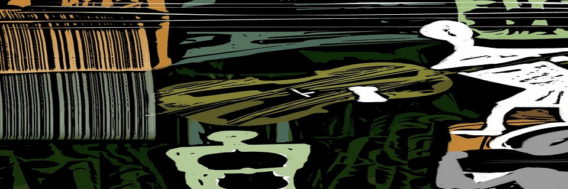

Arrangements and musical compositions for young string orchestra and other instrumental combinations, of different genres, styles and authors: Renaissance (Juan del Enzina); Baroque (Bach, Haendel, Rameau ...); 19th century (Albéniz, Bruch ...); 20th century (Bela Bartok, Granados...); soundtracks (Titanic, Schlinder's List, Game of Thrones ...); folk songs (Old McDonald, debajo un botón ...); pop and rock (The Beatles, Eric Clapton, Deep Purple ...); Christmas music (English, American and Spanish carols).
Compositions

Arrangements and original compositions ordered alphabetically by authors (Score, parts and recordings with virtual or real instruments).
Easy parts for violin, viola and cello are included, which are not indispensable, but which allow interpretation in multilevel orchestras. Also included, when the arrangement allows, a third violin part that replaces the viola.
The download is free. Voluntary donations are suggested for the maintenance of the activity and the page.
Meaning of the abbreviations:
(S.O.) ………… ...String orchestra
(S.O. + E.P.) ……. String orchestra with easy parts (easy violin, viola and cello and vln3/vla)
Editor: Real Musical; Edición: Real Musical (8 de junio de 2006)
Colección: RM Conjunto instrumentales
ISBN-10: 8438705952
ISBN-13: 978-8438705957
Abrete Sésamo (25 Piezas Fáciles para violín)
ÁBRETE SÉSAMO (25 Piezas Fáciles para violín) is a compilation of well-known works, both popular and classical. Each theme is presented in 3 ways: "Easy Violin" (open strings only), "Violin 1", will be useful in subsequent courses as an easy and attractive repertoire in 1st position. These arrangements therefore allow students of different levels to play together in collective classes. III. Piano, accompaniment for the teacher that includes the melody thus allowing the song to sound without the need of the main violin and also includes chord symbols to allow accompaniment with other harmonic instrument. Each track is recorded on the CD twice: Full version (Violin 1 and piano) and Version minus one (Piano only). In the book an appendix appears, suggesting some technical and musical exercises extracted from the works themselves to be used in both individual and collective classes.
Partitura: 68 páginas
Editor: Real Musical; Edición: Real Musical (19 de septiembre de 2011)
ISBN-10: 8438711553
ISBN-13: 978-8438711552
La enseñanza musical instrumental en la enseñanza obligatoria:
análisis de la situación actual y la clase de cuerda
como alternativa al currículo
Autor: Villanueva Liñán, Rafael
Director: Blasco García, Julio Andrés
Visualización y descargas: http://hdl.handle.net/10017/22645
Fecha: 2014
Universidad de Alcalá. Departamento de Ciencias de la Educación
Curriculum
Violinist, composer and teacher.Science and Education Phd. by Universidad de Alcalá. Violin studies at the RCSM de Madrid with Hermes Kriales, viola with Emilio Mateu, harmony with A.G. Acilu, counterpoint and fugue with D. Vega and composition and arrangements with R. Miralles and Eva Gancedo at the EMC de Madrid. A graduate in Biology from the Universidad Complutense de Madrid.
Composer of music for short movies, for an advertising campaign of the Comunidad de Madrid, and for dance. Arranger of the soundtrack of the film "Los invitados" (1988), nominated for a Goya award for the best soundtrack of the year. Composer of the soundtrack of the movie "Rotas" (2016) and of the ballet "De Amor Huido" (2016). Editorial contract with EMI for the composition of thirty pop-rock songs.
Published books: "8 piezas fáciles para orquesta de cuerda" (Real Musical); "Abrete Sésamo 25 piezas fáciles para violín" (Carisch). Commissioned from Carisch for the publication of an anthology of works for string orchestra.
Violinist in numerous orchestras (Philharmonic Orchestra of Gran Canarias, Chamber Orchestra Ars Nova, Camerata del Prado, National Classical Theater, National Dramatic Center) as well as in different jazz, flamenco and rock groups. Member of El Cuarteto de Alejandría. Collaborations with Carmen Linares, Amancio Prada, Serrat, Aute, Rafael Riqueni, Enrique Morente and Joaquín Cortés, among others. Numerous recordings for radio and TV.
Performer in the main concert halls in Spain (Teatro Real de Madrid, National Auditorium, Palau de la Música de Barcelona, Maestranza de Sevilla, Festival de Santander, Teatro Arriaga de Bilbao, Teatre Principal de Valencia ...) as well as in other important halls in England, the United States, France, Holland, Sweden, Germany, Italy, Portugal, Argentina, Colombia, Venezuela, Greece, Mexico, Norway, Belgium, Luxembourg, Japan and China.
Violin teacher at the Conservatory of Alcázar de San Juan (91-92), at the Royal Conservatory of Music in Madrid (92-93), director of the Children's Section of the City of Alcalá Orchestra (2004-15). Currently: conductor of the Orchestra of the British Council School in Madrid; associate professor of Musical Didactics at the University of Alcalá de Henares; professor of the Master in Education of the European University of Madrid in the specialty of Music.
News
Find here the lastest compositions, publications and events
Find here the lastest compositions, publications and events
Contact
If you have found the arrangements and compositions useful or want to suggest some correction - errare humanum est - I would appreciate greatly your comments.